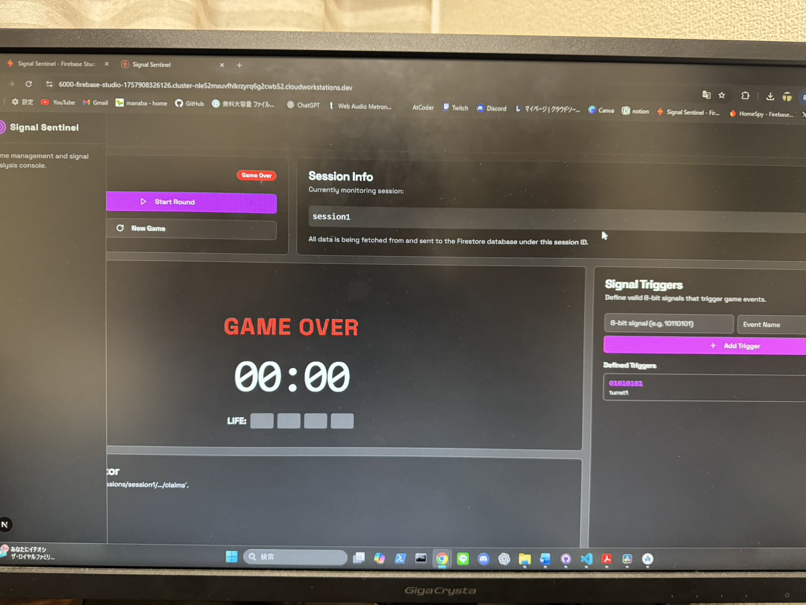
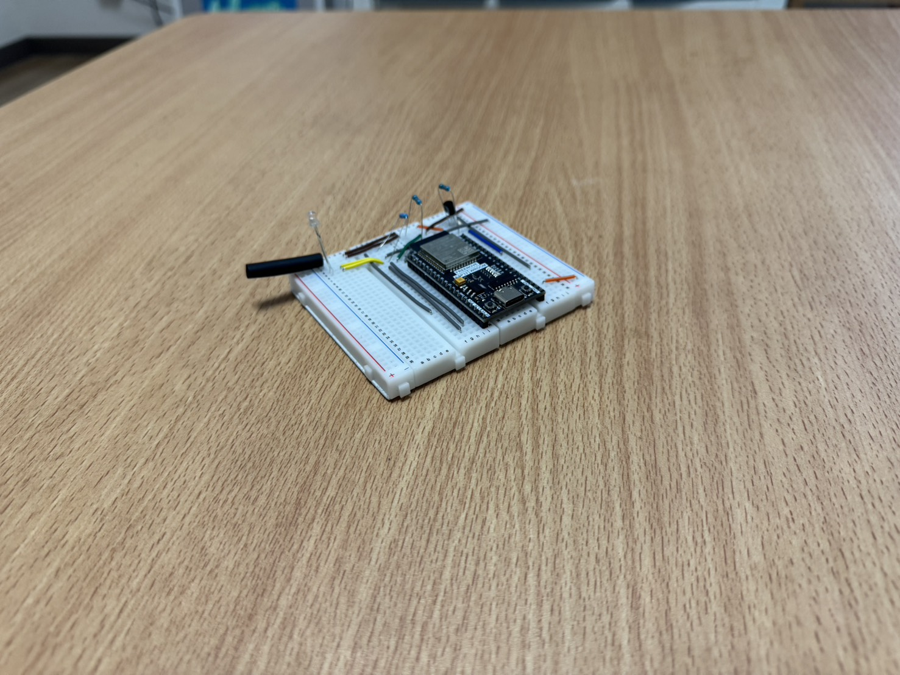
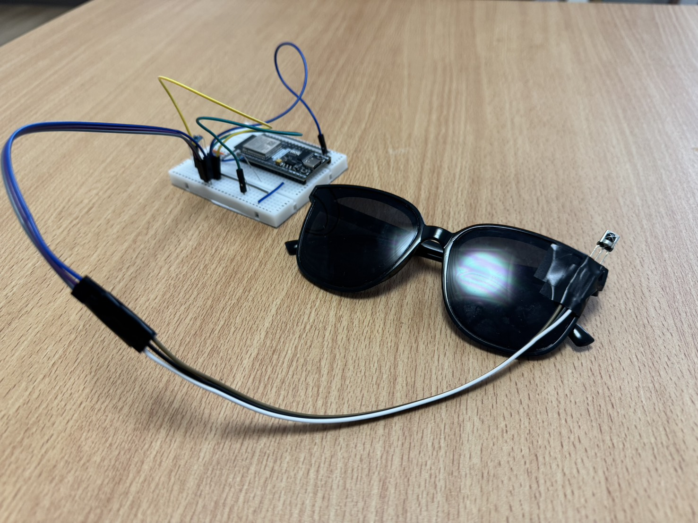

HomeSpy
「面白い」という感覚を、現実空間で成立する構造へ落とし込んだ対戦型宝探しゲーム。


▶ 解説・プレイ動画（約30秒）
企画・体験設計
Flutter
Firebase
ESP32
面白さをどう構造にしたか
「スパイ体験」という抽象的なワクワクを、 役割・罠・探索という具体的なルールへと分解し、 現実空間で再現可能な形に組み立てました。
面白さを感覚のままにせず、 何が選択になり、何が読み合いになるのかを整理しながら設計しています。
試行錯誤の中での発見
自由度を増やす設計も試しましたが、 検証を通じて「適度な制約がある方が思考が活発になる」ことを学びました。
「読み合い」の密度を保つために、 観察→仮説→プロトタイプ→現場テストのサイクルを短く回しています。
デバイス写真





筐体、配線、センサー配置を検証したプロトタイプ群。屋外運用や視認性テストを想定して作り、移動・設置のしやすさを重視しています。